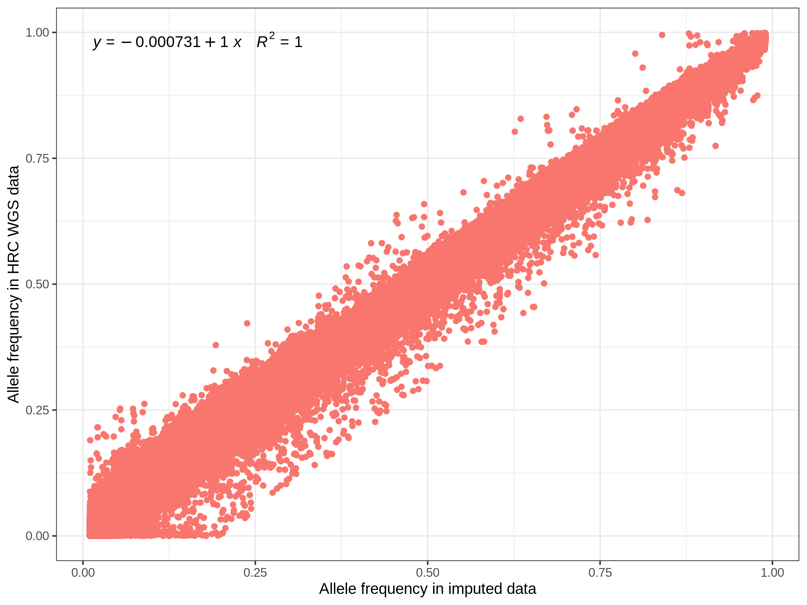
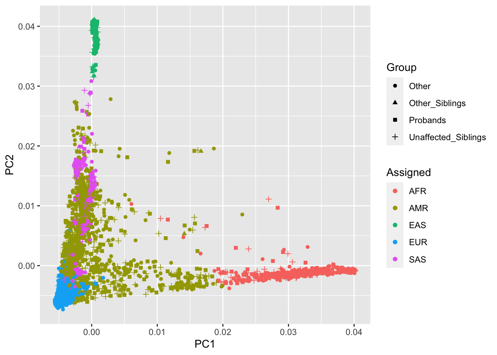
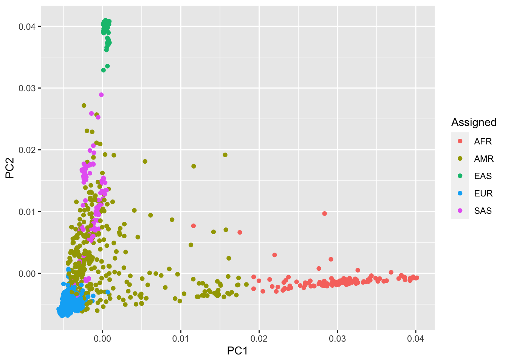

The whole pre-Imputation QC process stored in /gpfs1/scratch/group30days/cnsg_park/uqywan/auti/scripts/ssc_preImp_QC.R

toAssign <- read.table("../outputs/ssc_anc.txt", header = T, stringsAsFactors = F)
#pca_all <-
ggplot(data = toAssign, aes(x = PC1, y = PC2, color = Assigned, shape = Group)) +
geom_point() +
ylab("PC2") +
xlab("PC1")
toAssign1 <- read.table("../outputs/proband_anc.txt", header = T, stringsAsFactors = F)
kable(table(toAssign1$Self_Reported, toAssign1$Assigned))| AFR | AMR | EAS | EUR | SAS | |
|---|---|---|---|---|---|
| african-amer | 91 | 7 | 0 | 0 | 1 |
| asian | 0 | 1 | 60 | 0 | 47 |
| more-than-one-race | 11 | 100 | 2 | 44 | 45 |
| native-american | 0 | 4 | 0 | 1 | 0 |
| native-hawaiian | 0 | 0 | 1 | 1 | 0 |
| not-specified | 1 | 16 | 0 | 2 | 0 |
| other | 4 | 91 | 0 | 14 | 12 |
| white | 1 | 116 | 0 | 1907 | 8 |
#pca_prob <-
ggplot(data = toAssign1, aes(x = PC1, y = PC2, color = Assigned)) +
geom_point() +
ylab("PC2") +
xlab("PC1")